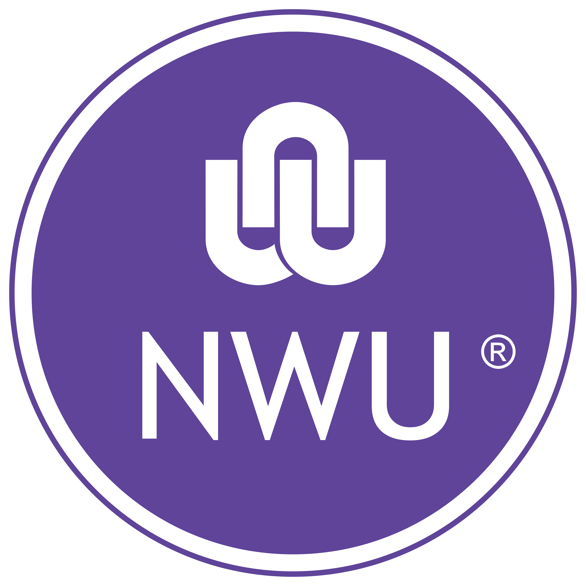

Education
Supporting documentation for qualifications is available upon request.

The degree focuses on developing strong technical and analytical skills, with coursework covering key areas such as software development, systems analysis, data management, and network design.
Digital Credentials from Quality Matters showcase evidence-based achievements in QM Professional Development.
This 5-week course offers foundational knowledge on learning analytics, particularly in the context of a teacher.
Badge earners explored factors influencing how instructional technology support services are offered in higher education and identified ways to address potential implementation obstacles.
Digital Credentials from Quality Matters showcase evidence-based achievements in QM Professional Development.
After completion I am able to explain the research process, select appropriate research methods and paradigms, write literature reviews and research proposals, and conduct basic analysis on both qualitative and quantitative data, including descriptive and inferential statistics.
Post Graduate Diploma in Management with Business Administration at the North West University Business School completed with distinction.
Completed a short course at the North West University creativity center.
Completion of the University of Witwatersrand Instructional Design online short course.
Completion of the University of Cape Town Project Management Foundations online short course.
Continuing Education in fieldworker training for conducting interviews and selecting samples in demarcated areas.n.
Management degree specializing in Marketing Management, Communication Management, and Business Management.
Skills

Technical Skills
- Proficient in all Microsoft Office applications, ensuring efficient and effective document, presentation, and data management. Including all Power Platforms (PowerApps, PowerBI, Power Automate)
- Advanced expertise in Google Suite, including data analysis, visualization, and automation
- Proficient in multiple programming languages, including HTML, C++, C#, Java, and DAX, enabling versatile and robust software development capabilities
- Extensive experience with Learning Management Systems, particularly in the publication and management of study materials
Professional Attributes
- Strong interpersonal skills, facilitating excellent communication and collaboration within diverse teams
- Quick learner with the ability to rapidly acquire new software skills, ensuring adaptability in dynamic technological landscapes
- High attention to detail, consistently delivering accurate and high-quality products
- Effective team player and independent worker, demonstrating reliability and adaptability
- Dedicated and committed to achieving excellence in all tasks undertaken
Communication & Soft Skills
- Bilingual proficiency in Afrikaans and English, ensuring clear and effective communication
- Exceptional administrative and record management skills
- Proven ability to provide excellent customer service
- Strong problem-solving and analytical thinking capabilities